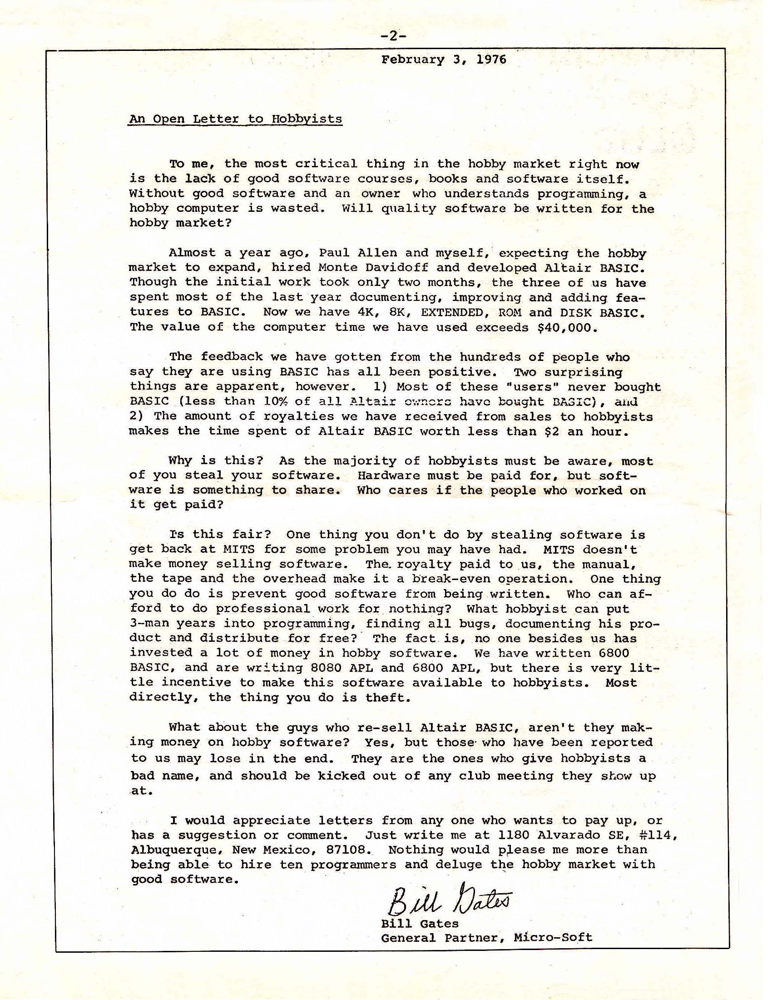
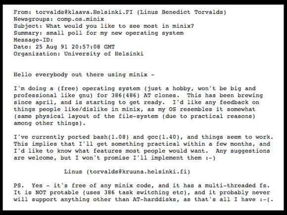

class: center, middle, inverse # Flatcar Linux ## A Container-Focused Operating System ### Oz Tiram ### CNCF Meetup Nürnberg ### 2025.07.10 --- # Trivia! * <span class="hover-trigger">What happened on the 3rd of February 1973?<span class="hover-image"></span></span> -- * <span class="hover-trigger">What happened on 25th of August 1991?<span class="hover-image"></span></span> -- * <span class="hover-trigger">And last, on 21st of June 2025?<span class="hover-image"></span></span> --- # Agenda 1. History of CoreOS -- 2. History of Flatcar -- 3. Benefits of Flatcar -- 4. Butane Configuration Tool -- 5. Extensions and Ecosystem -- 6. Bonus! matchbox! --- # History of CoreOS - Founded in 2013 as an OS dedicated for running Docker containers. - pre-dates Kubernetes. - **Technical Lineage**: - Built on the foundation of **Gentoo Linux**, a source-based distribution - Borrowed build system and update mechanisms from **Chrome OS** - Adopted Chrome OS's dual-partition design for reliable updates - **Invented etcd**: - etcd became a foundational component of Kubernetes - Pioneered immutable infrastructure and automatic updates --- # CoreOS History (continued) - **Kelsey Hightower** joined CoreOS in 2014 as a Developer Advocate - Became a prominent Kubernetes advocate and educator - Created "Kubernetes The Hard Way" tutorial - Acquired by Red Hat in January 2018 for $250 million - Red Hat announced the end-of-life for CoreOS Container Linux in May 2020 - CoreOS's technical DNA lives on in both Fedora CoreOS and Flatcar Linux --- # CoreOS Legacy and Impact * etcd: Now a graduated CNCF project and critical to Kubernetes * Container Linux: Influenced many container-optimized OSes * Ignition: Became the standard for first-boot configuration * Fleet: Early container orchestration (predated Kubernetes adoption) * rkt: Alternative container runtime that influenced OCI standards * Tectonic: Enterprise Kubernetes platform (later evolved into OpenShift) * Quay: Container registry (now Red Hat Quay) --- # History of Flatcar - Flatcar Container Linux is a community-driven fork of CoreOS Container Linux - Emerged in 2018 after Red Hat acquired CoreOS and announced the end of CoreOS Container Linux - **Technical Heritage**: - Maintains the same Gentoo/Chrome OS lineage as CoreOS - Preserves the dual-partition update system - Continues the focus on minimal, container-optimized design -- - Kinvolk (the company behind Flatcar) was acquired by Microsoft in 2021 --- # Benefits of Flatcar - **Immutable Infrastructure**: Read-only root filesystem for improved security - **Automatic Updates**: A/B partition scheme for reliable, atomic updates (inherited from Chrome OS) - <span class="hover-trigger">**Long-term Support** or **Rolling Release**<span class="hover-iframe"><iframe src="https://blog.hartwork.org/posts/how-much-security-is-in-long-term-support/" frameborder="0"></iframe></span><sup class="custom-sup">1</sup> - **Container-Optimized**: Designed specifically for running containerized applications - **Minimal Design**: Reduced attack surface with only essential components - **Community-Driven**: Open development process with regular updates -- <sup class="custom-sup">1 <a href="https://gitlab.gnome.org/GNOME/libxml2/-/issues/913" target="_blank">Bugs vs. security issues.</a></sup> --- # Butane Configuration Tool Butane is the utility for transforming human-friendly configurations into machine-readable Ignition configs: ```yaml variant: flatcar version: 1.0.0 passwd: users: - name: core ssh_authorized_keys: - ssh-rsa AAAAB......xyz [email protected] ``` --- Converted to Ignition JSON: ```json { "ignition": { "version": "3.3.0" }, "passwd": { "users": [ { "name": "core", "sshAuthorizedKeys": [ "ssh-rsa AAAAB......xyz [email protected]" ] } ] } } ``` --- # Why Use Butane? * Human-Friendly: YAML > JSON * Error Detection: Catches configuration issues before machine boot * Distribution-Aware: Understands Flatcar-specific features * Two-Step Process: Separates configuration creation from boot process --- # Butane's key features: * User management * Network configuration * Storage setup * Systemd unit management * Container deployment --- # Flatcar Extensions * Ignition: First-boot provisioning tool * Terraform Providers: Infrastructure as code support * Container Runtime: Docker and containerd support * Kubernetes Integration: Optimized for container orchestration * Cloud Provider Support: AWS, GCP, Azure, and others * Update Management: Automatic, reliable system updates --- class: center, middle, inverse # Bonus! --- # What is Matchbox? * **Matchbox** is a service that matches bare-metal machines to profiles for PXE booting and provisioning clusters -- * Part of the Poseidon project on GitHub (github.com/poseidon/matchbox) -- * Core functionality: * Matches machines by hardware labels (MAC address, UUID) * Provides PXE boot configurations * Delivers Ignition configs for OS provisioning * Supports Fedora CoreOS and Flatcar Linux -- * Enables network booting and automated provisioning of physical servers --- # Why Use Matchbox? * **Bare-Metal Automation** - Provision physical servers as easily as cloud VMs -- * **Infrastructure as Code** - Define your bare-metal infrastructure with Terraform -- * **Perfect for Flatcar** - Designed to work with container-focused OSes like Flatcar Linux -- * **Stateless Design** - Machines are matched by labels, not hardcoded configurations --- class: center, middle, inverse # Demo time ## https://github.com/oz123/flatcar-matchbox-ftw --- class: center, middle, inverse # Thank You! ## Questions?